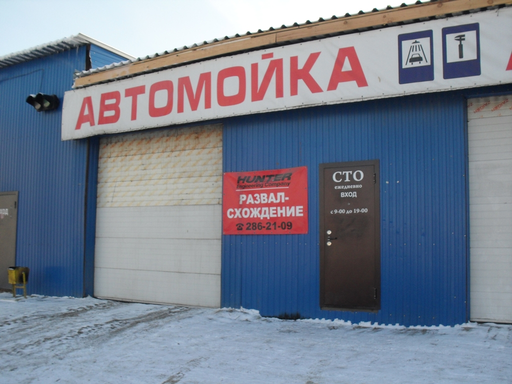
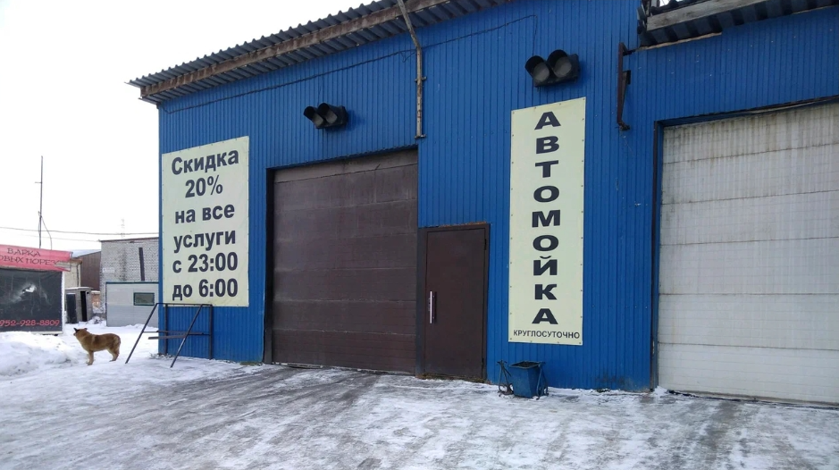
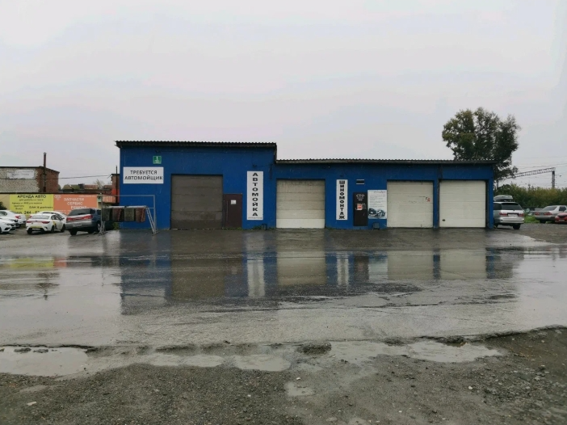
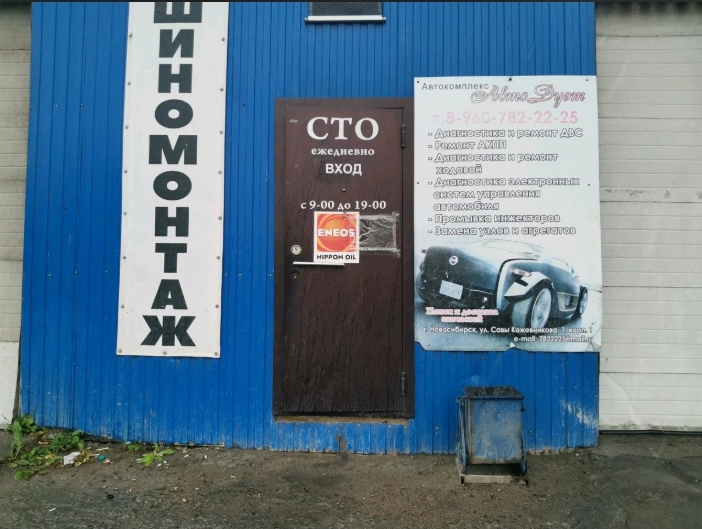

О компании
Автосервис Автодуэт открывает свои двери для жителей и гостей Новосибирска. Здесь производят ремонт подвески, ходовой и двигателя.
Мастера знают типичные неисправности самых разных моделей, но если ваш случай не похож на остальные, они изучат «симптомы»,
поставят предварительный «диагноз» и перепроверят его при помощи точного оборудования. Сотрудники начнут работу, только когда обговорят с вами цены и сроки,
а если они выявят неполадки, о которых не было сказано, то спросят у вас, стоит ли их устранять.
Здесь специализируются на ГАЗ, УАЗ, Kia, BMW и Honda. Помимо этого, в автосервисе Автодуэт протачивают тормозные диски, а также выполняют диагностику подвески, химчистку, шиномонтаж и полировку, бесконтактную мойку. Почувствовав преимущества комплексного обслуживания, вы вряд ли согласитесь на меньшее!
Компания расположена по адресу: Россия, Новосибирск, Саввы Кожевникова, 1 к1.
Хотите узнать подробности? Позвоните по телефону +7 (960) 782-22-25.
Двери организации открыты Пн-вс: 09:00 - 19:00; автомойка: пн-вс круглосуточно, перерыв: 2:00—4:00.
Здесь специализируются на ГАЗ, УАЗ, Kia, BMW и Honda. Помимо этого, в автосервисе Автодуэт протачивают тормозные диски, а также выполняют диагностику подвески, химчистку, шиномонтаж и полировку, бесконтактную мойку. Почувствовав преимущества комплексного обслуживания, вы вряд ли согласитесь на меньшее!
Компания расположена по адресу: Россия, Новосибирск, Саввы Кожевникова, 1 к1.
Хотите узнать подробности? Позвоните по телефону +7 (960) 782-22-25.
Двери организации открыты Пн-вс: 09:00 - 19:00; автомойка: пн-вс круглосуточно, перерыв: 2:00—4:00.




Рейтинги от zoon.ru:
39 место из 250 — Замена тормозных колодок УАЗ
40 место из 240 — Замена тормозных колодок ГАЗ
43 место из 338 — Ремонт бензиновых двигателей ГАЗ
39 место из 250 — Замена тормозных колодок УАЗ
40 место из 240 — Замена тормозных колодок ГАЗ
43 место из 338 — Ремонт бензиновых двигателей ГАЗ